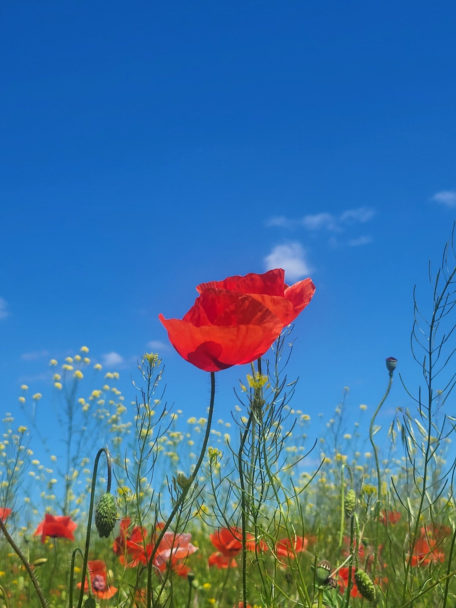

Gallery
Illustrations, traditional motifs, and visual materials related to the fairytales and culture of the Apostolove region.

Illustration from the collection.
Fairytales from the Apostolove Region of Ukraine
Illustrations, traditional motifs, and visual materials related to the fairytales and culture of the Apostolove region.

Illustration from the collection.